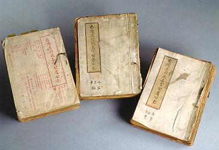

義助慰安婦
—— 李敖百件珍藏義賣藝術品（第82件）
品 名： H12. 台灣行政長官公署公報 附早期省政府公報 219 本 預估價： 40 萬 成交價： 40 萬 說 明： 台灣行政長官公署公報是陳儀時代的政府公報，因台灣早期被日本統治了五十一年，許多人看不懂漢文，因此公報中有不少日文，法令還有譯文版，譯成日文。公報中談二二八事變的資料中斷，故有的稱二二八事變，有的稱二二八事件。至陳儀下台，魏道明接任台灣省政府主席，台灣才由行政長官公署改成台灣省政府，而開始有台灣省政府公報。這些早期的官方文書看起來雖殘破，但在有心人的保存下，還是很難得地留存下來。
